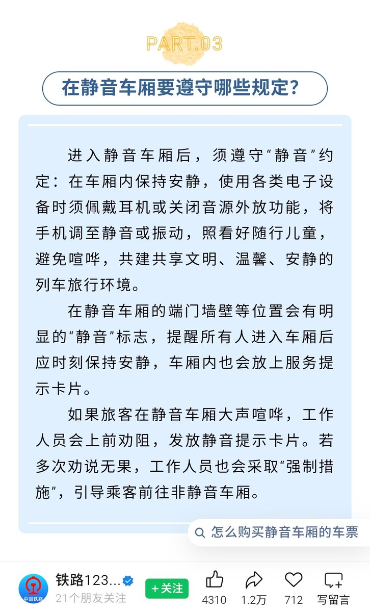

RedFox（2代目）
@FoxRed695449
@G4O7aTAEg41854 @nanami_mua @YiK0_o 没问题啊,哪怕是静音车厢和日本比就是吵啊
某些局静音车厢有人吵，乘务人员不管就该骂啊,自己定的规则不执行就是该骂
还是我原观点,要当政绩宣传就把定的规则好好执行而不是当把自己定规则当擦屁股的废纸
国铁不管2等1等特等商务都有可能遇到吵的,尤其和一等共用车厢的特等和商务遇到超的能折磨死你

Laorephy
@G4O7aTAEg41854
@FoxRed695449 @nanami_mua @YiK0_o 看清楚，是帖主本人硬拿新干线对比的😅，我这句一分钱一分货也是针对大陆和日本